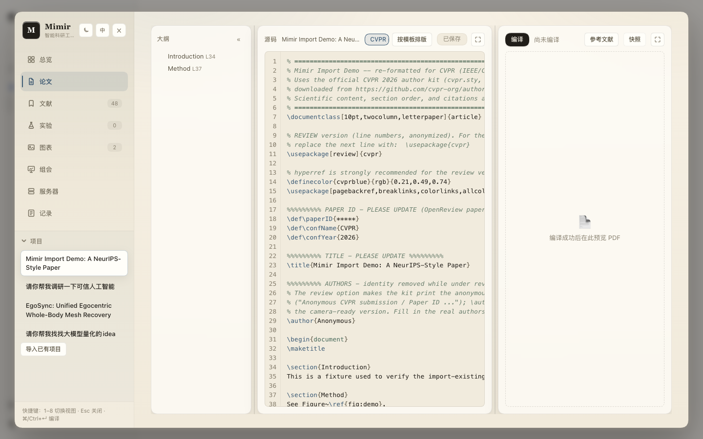
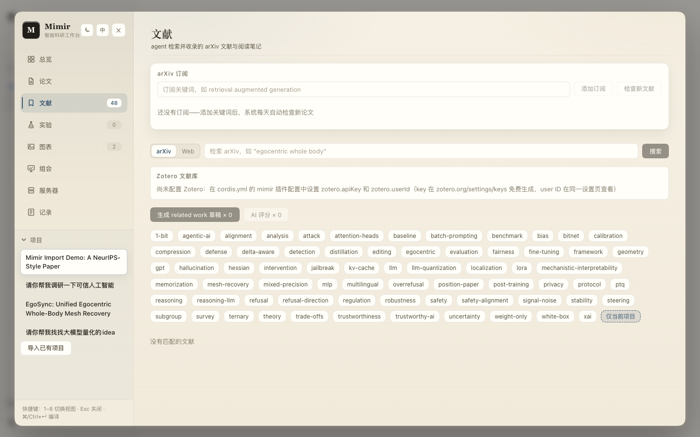
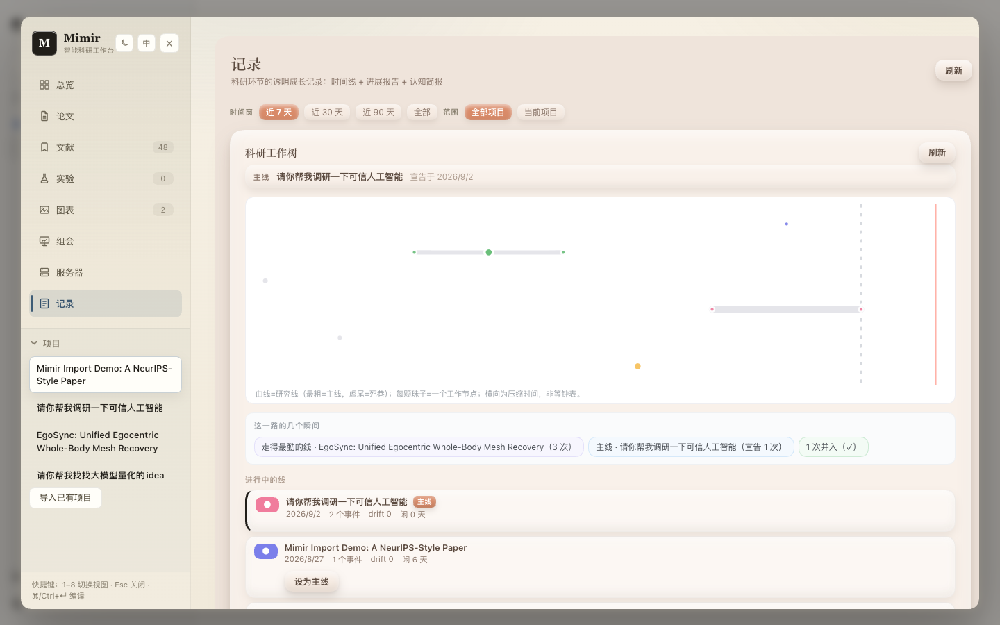
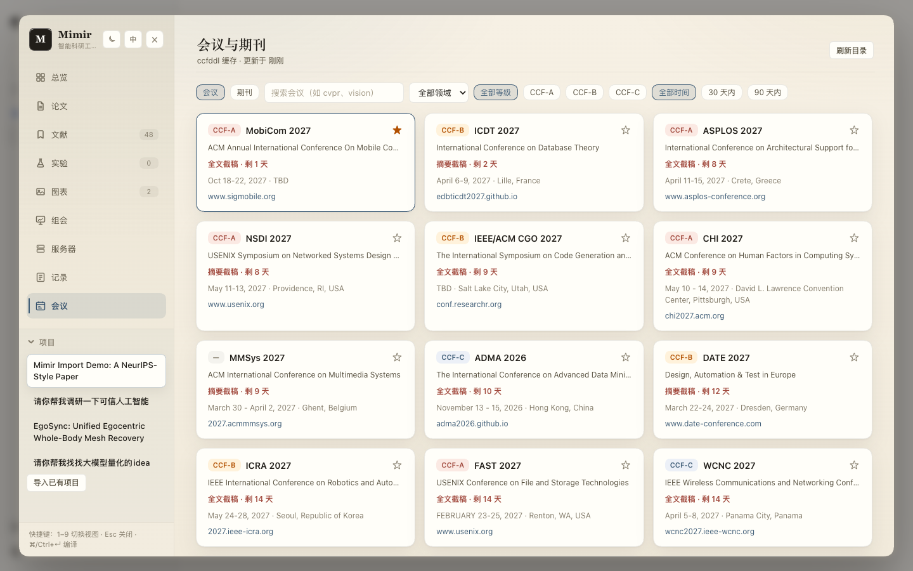
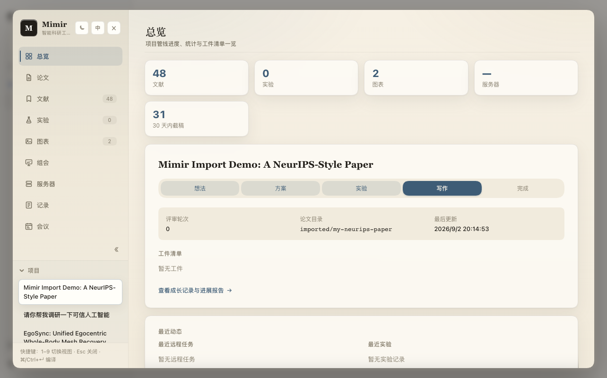

SCREENSHOTS
界面一览
点击任意截图放大查看






论文 · 文献 · 实验 · 图表 · 组会 · 服务器 · 会议——管理科研全周期
The whole research cycle, in one workbench.
dsh plugin --profile web add dsh-mimir@latest
git clone https://github.com/1692775560/dsh-Mimir-Academic-research && cd dsh-Mimir-Academic-research && pnpm install && pnpm build
9 个视图 · 1215 项自动化测试 · MIT 开源

九个视图覆盖科研的每个环节，数据都在同一个项目里流转
大纲、源码、PDF 三栏同屏，边改边编译；会议模板一键排版，编译成功自动存快照随时回滚。
关键词订阅自动追新，AI 按你的方向打分排序；PDF 全屏阅读，SearXNG 全网搜索面板可配，Zotero 同步。
配置、指标、结论结构化记录，指标趋势图自动生成，会话产出自动入库。
agent 生成的图自动收进图表库，AI 归纳命名，一键插进论文对应位置。
选中文献和当前进展一键生成汇报：保留论文原图，可配生图 API 自动插画。
SSH 直连 AutoDL 等算力机器，任务提交、状态轮询、日志回传都在面板里。
本地 LaTeX 工程一键导入：自动识别入口文件、标题与图片，复制进工作区，原目录不动。
想法演化自动收进 worktree，六视角摘要胶囊读懂你的进度，一键生成周期进展报告。
CCF 目录会议截稿倒计时，按项目星标关注，附 CCF-A 期刊目录；agent 可用 venue_search 直接答"还能投什么"。
wiki 变更经 SSE 即时推到打开的面板：agent 跑完一轮、同伴改了一笔，九个视图免刷新自动跟随。
点击任意截图放大查看




愿每一个追问世界的人，
都不再孤军奋战。
凌晨三点的实验室，总有人对着编译失败的 LaTeX 发呆；截稿前的一周，总有人在上百篇文献里迷路。 我们见过太多聪明的头脑，被困在格式、路径和命令行里——他们本该站在更远的地方。
Mimir 想做的事很简单：让机器去搬那些笨重的砖，让人去思考那些发光的题。 盯 arXiv、记实验、归图表、排格式，交给 agent；而你，只管去追问、去假设、去证明。 它开源、免费，永远如此——因为我们相信，科学的进步不该被工具的价格拦住， 每一个认真追问世界的人，都值得最好的装备。
如果有一天，你论文里的某一行结论，诞生于它为你省下的那一个小时—— 那一个小时，就是我们全部的意义。
MIMIR 共创者 · 与所有在路上的科研人
需要 Node.js ≥ 22、dsh CLI（npm i -g @deepseek-ai/dsh）和一个 DEEPSEEK_API_KEY
一条命令安装并自动激活，随包装好全部依赖（含 Web 搜索 CLI）。
启动 web 界面，点左侧边栏底部的 Mimir 即可开始。
可选能力：论文编译装 brew install tectonic · Web 搜索跑 bash scripts/setup-web-search.sh（免 Docker 一键 SearXNG）· Zotero 在配置里填 API Key 即可
装到了旧版本？pnpm 会延迟加载刚发布的新版，用精确版本号重装：dsh plugin --profile web remove dsh-mimir 后 dsh plugin --profile web add dsh-mimir@0.19.0
版本兼容：0.18.x 需要 dsh ≥ 0.1.2-alpha.4（上游有破坏性改动）；旧版 dsh 请钉住 dsh-mimir@0.16.0
同一个工作台，两种形态——按你的习惯选
社区共创者 @hxhy00 重写的独立 Electron 应用：开箱即用，不用装 dsh、不用自起后端。文献、论文、实验、图表、组会、会议截稿、GPU 服务器、Agent 对话与语音——功能同源，MIT 开源。
GitHub 仓库 ↗有问题、想法或想一起共建，随时来聊
Esc 或点击任意处关闭